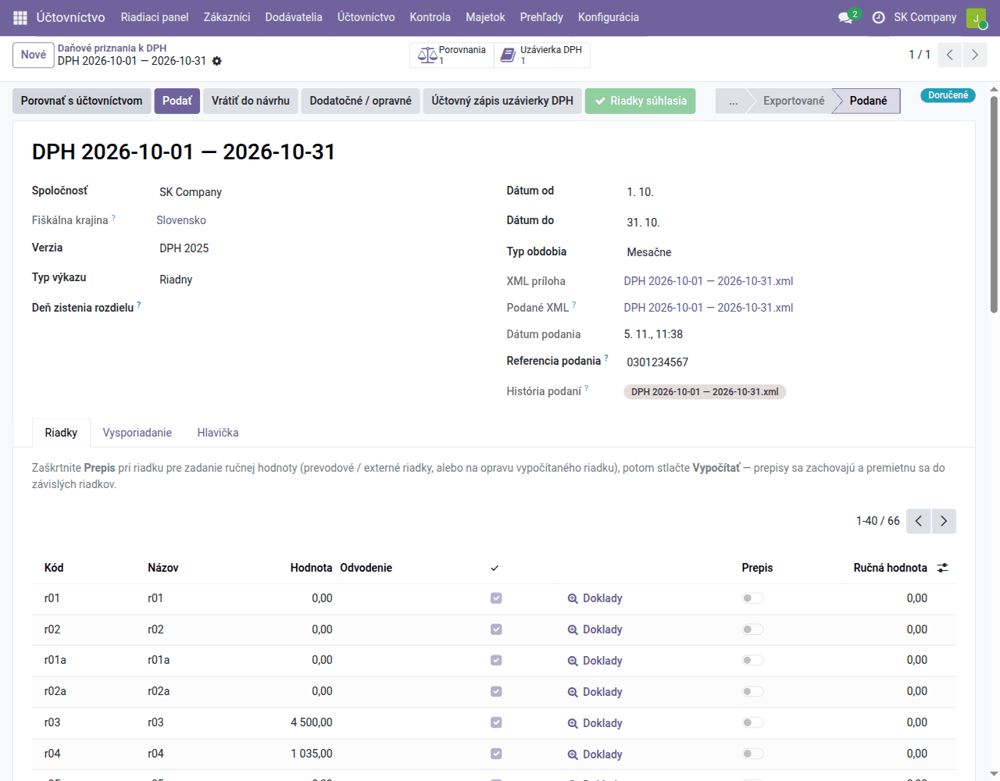
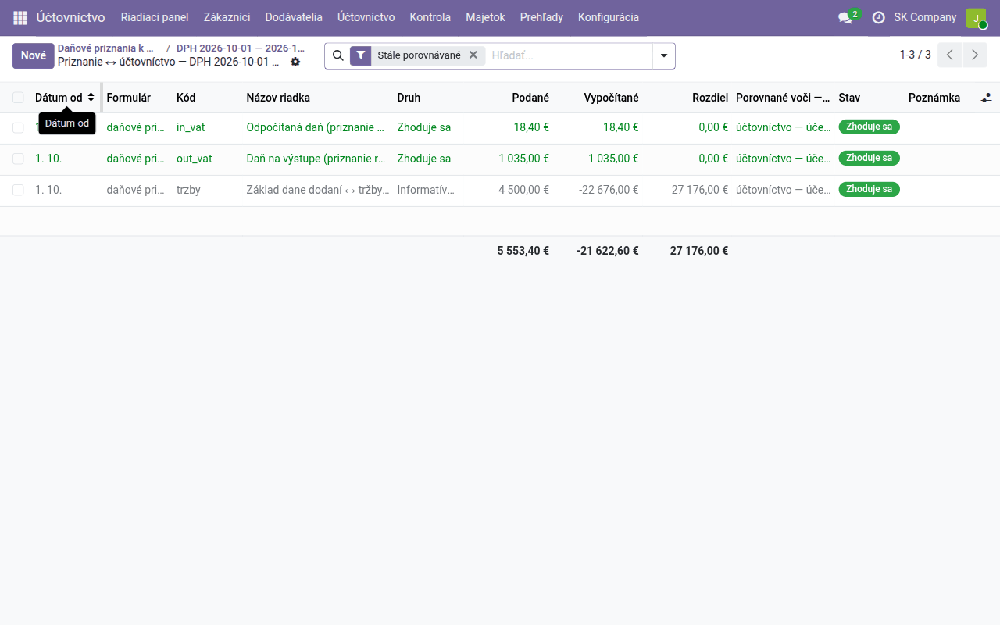
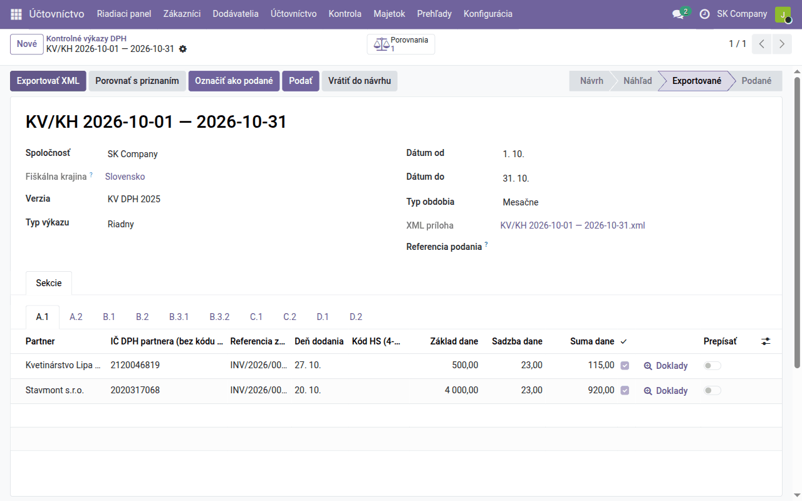
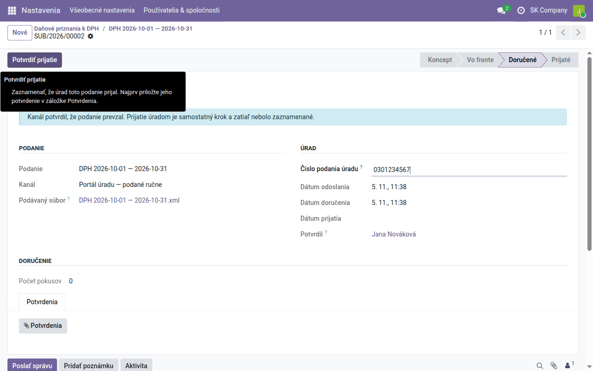
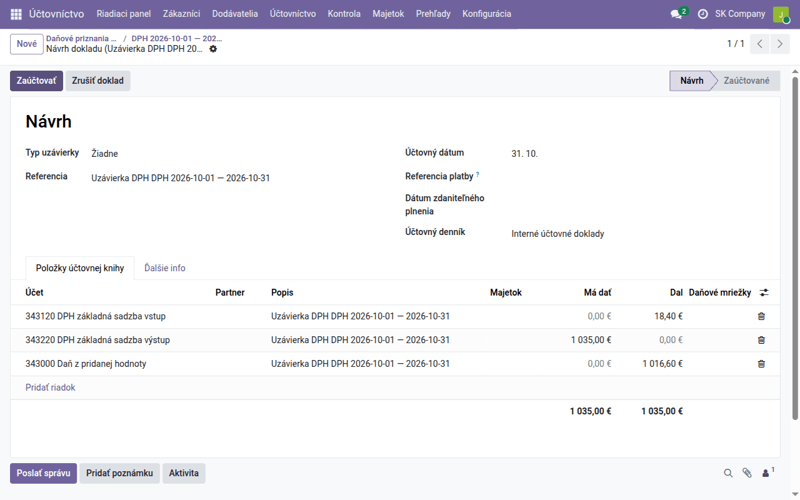

Návod k úlohe
Mesačná uzávierka DPH
Daňové priznanie k DPH, kontrolný výkaz a súhrnný výkaz za mesiac — výpočet, kontrola voči účtovníctvu, export XML, podanie, účtovný zápis uzávierky DPH a uzamknutie obdobia.
| Krajina | Slovensko |
|---|---|
| Edícia | Odoo Community |
| Zahŕňa | l10n_cssk_vat_return_base, l10n_sk_vat_return, l10n_cssk_kv_kh_base, l10n_sk_kv_dph, l10n_cssk_ec_summary_base, l10n_sk_ec_sales, l10n_cssk_submission_base, l10n_sk_datadance |
Na čo slúži tento návod
Návod prejde mesačnú uzávierku DPH tak, ako ju robí účtovník platiteľa s mesačným zdaňovacím obdobím: vypočíta daňové priznanie k DPH, kontrolný výkaz a súhrnný výkaz, skontroluje ich voči účtovníctvu a navzájom, vyexportuje XML na podanie, zaznamená podanie, zaúčtuje uzávierku účtov 343 a obdobie uzamkne.
Všetky tri výkazy sú v Účtovníctvo → Prehľady → Zákonné výkazy. Doklady, z ktorých sa počítajú, vznikajú podľa návodu Denná agenda; dane a daňové pozície podľa návodu Nastavenie predkontácií.
Lehota na podanie daňového priznania aj kontrolného výkazu a na zaplatenie vlastnej daňovej povinnosti je 25 dní po skončení obdobia (§ 78 ods. 1 a 4, § 78a).
Pred prvou uzávierkou
Raz, pred prvým podaním:
- IČ DPH a DIČ spoločnosti — v údajoch spoločnosti (Nastavenia → Spoločnosti). Do hlavičky XML idú odtiaľ, spolu s názvom a adresou.
- Daňový úrad — Účtovníctvo → Konfigurácia → Nastavenia, pole Predvolený správca dane. Bez neho sa XML vyexportuje s prázdnym daňovým úradom a portál finančnej správy ho odmietne.
- Účty uzávierky DPH — v tých istých nastaveniach, blok Uzávierka DPH: účet, na ktorý sa zúčtujú účty 343 (predvolene 343000 Daň z pridanej hodnoty), účty na zaokrúhlenie (548000 a 648000) a tolerancia zaokrúhlenia. Prázdne účty znamenajú tieto predvolené.
- Oprávnenia — výkazy pripraví každý Hlavný účtovník. Podanie potvrdzuje len používateľ s rolou Štatutárne podania: podávať — tú nastavíte v Nastavenia → Používatelia, pole Účtovníctvo. Táto rola zahŕňa aj práva hlavného účtovníka.
Ktoré doklady patria do obdobia
Daňové priznanie neberie doklady podľa jedného dátumu:
| Strana | Do obdobia patrí doklad podľa |
|---|---|
| Daň na výstupe (vystavené faktúry, dobropisy) | dátumu dodania (deň vzniku daňovej povinnosti) |
| Odpočet dane (prijaté faktúry) | účtovného dátumu — teda obdobia, v ktorom faktúru zaúčtujete a odpočet uplatníte |
| Interné doklady, banka, pokladňa | účtovného dátumu |
Ak chcete odpočet z prijatej faktúry uplatniť v inom období, než do ktorého ju zaúčtujete, vyplňte na faktúre pole Deklarované obdobie DPH; prednosť má pred účtovným dátumom.
Pred výpočtom preto skontrolujte, že sú zaúčtované všetky faktúry s dátumom dodania v mesiaci a všetky prijaté faktúry, ktorých odpočet chcete uplatniť.
Daňové priznanie k DPH
Účtovníctvo → Prehľady → Zákonné výkazy → Daňové priznanie k DPH → Nové:
- Dátum od a Dátum do — prvý a posledný deň mesiaca (formát
1. 10. 2026). - Verzia — Odoo ponúkne len vzor tlačiva platný pre zvolené obdobie (pre rok 2026 DPH 2025); vyberte ho.
- Typ výkazu Riadny a Typ obdobia Mesačne.
- Kliknite na Vypočítať.
Priznanie prejde do stavu Náhľad a na karte Riadky sú všetky riadky
tlačiva s vypočítanou hodnotou. Riadky sa volajú číslami riadkov tlačiva
(r03 je základ dane so sadzbou 23 %, r04 daň z neho, r21 odpočet
v základnej sadzbe, r32 vlastná daňová povinnosť).

Pri každom riadku:
- Doklady otvorí položky účtovnej knihy, z ktorých je riadok vypočítaný — odtiaľ sa dostanete na faktúru.
- ✓ je zaškrtnuté, ak sa riadok zhoduje so súčtom svojich položiek. Zelené tlačidlo Riadky súhlasia v hlavičke hovorí, že sa zhodujú všetky; ak nie, je namiesto neho červené Nesúladné riadky a ukáže tie, ktoré nesedia.
- Prepis a Ručná hodnota — hodnotu riadku zadáte ručne (napríklad prevod z iného systému); po Vypočítať sa prepis zachová a premietne do súčtových riadkov.
Karta Vysporiadanie ukazuje nadmerný odpočet z minulého obdobia, či ho prenášate do ďalšieho (Preniesť nadmerný odpočet), a výslednú sumu Na úhradu / (vrátenie). Karta Hlavička obsahuje, kto priznanie podáva, a oprávnenú osobu (meno, telefón, e-mail), ktorá sa zapíše do XML.
Kontrola voči účtovníctvu
Tlačidlo Porovnať s účtovníctvom porovná priznanie s účtovníctvom:
| Riadok porovnania | Čo musí sedieť |
|---|---|
| Daň na výstupe | riadok r17 = daň zaúčtovaná na účty 343 z predajných daní |
| Odpočítaná daň | súčet odpočtov = daň zaúčtovaná na účty 343 z nákupných daní |
| Základ dane ↔ tržby účtovej triedy 60 | len informatívne |
Prvé dva riadky sa musia zhodovať na cent. Rozdiel znamená, že daň bola zaúčtovaná bez daňovej mriežky (napríklad ručný zápis na 343) alebo naopak. Tretí riadok sa líši bežne — prijaté preddavky, výnosy bez DPH, dobropisy k dokladom bez dane — a je tam len pre orientáciu.

Keď všetko sedí, kliknite na Exportovať XML. Odoo súbor pred uložením overí proti oficiálnej schéme finančnej správy, priloží ho k priznaniu (pole XML príloha) a priznanie prejde do stavu Exportované.
Kontrolný výkaz DPH
Účtovníctvo → Prehľady → Zákonné výkazy → Kontrolný výkaz DPH → Nové, rovnako ako priznanie: obdobie, Verzia (KV DPH 2025), Typ výkazu Riadny, Typ obdobia Mesačne a Vypočítať.
Doklady sa rozdelia do oddielov tlačiva, každý na vlastnej karte:
| Oddiel | Čo obsahuje |
|---|---|
| A.1 | vystavené faktúry so slovenskou DPH odberateľom s IČ DPH alebo IČO |
| A.2 | vystavené faktúry s tuzemským prenosom daňovej povinnosti (§ 69 ods. 12) |
| B.1 | prijaté faktúry so samozdanením — tuzemský prenos, tovar a služby z EÚ |
| B.2 | ostatné prijaté faktúry s DPH, s číslom faktúry dodávateľa |
| B.3.1, B.3.2 | prijaté zjednodušené faktúry (bločky) — súhrnom, od 3 000 € odpočtu podľa dodávateľov |
| C.1, C.2 | dobropisy a ťarchopisy — vystavené a prijaté, s číslom opravovanej faktúry |
| D.1 | tržby z pokladnice eKasa |
| D.2 | ostatné plnenia (napríklad faktúry nepodnikateľom) súhrnom podľa sadzieb |
Každý riadok A.1 až C.2 nesie IČ DPH partnera, číslo faktúry, deň dodania,
základ, sadzbu a daň. Ak odberateľ, ktorý je platiteľom, skončí v D.2
namiesto A.1, nemá v Odoo vyplnené IČ DPH ani IČO — doplňte ich a výkaz
vypočítajte znova. Ako zaradiť doklady do A.2, B.3 a D.1, opisuje modul
l10n_sk_kv_dph.

Tlačidlo Porovnať s priznaním overí, že kontrolný výkaz a daňové priznanie za to isté obdobie súhlasia: výstupná daň (A.1 + C.1 voči r02 + r04), odpočítaná daň (B.2 + B.3 + C.2 voči odpočtom) a samozdanenie (B.1). Potom Exportovať XML.
Súhrnný výkaz
Súhrnný výkaz podávate len za mesiac, v ktorom ste dodali tovar alebo služby
platiteľom v inom štáte EÚ (daňové pozície EÚ). Účtovníctvo → Prehľady →
Zákonné výkazy → Súhrnný výkaz → Nové, obdobie a Vypočítať. Riadky sú
zoskupené podľa IČ DPH odberateľa a kódu plnenia: dodanie tovaru (v tlačive
bez kódu), trojstranný obchod (1) a služby (2). Tlačidlo Porovnať
s priznaním porovná dodanie tovaru s riadkom r14 priznania.
Podrobnosti sú v module
l10n_sk_ec_sales.
Podanie
Exportované XML podáte na portáli finančnej správy (eDane, alebo Formuláre → Načítať zo súboru na financnasprava.sk) a podpíšete. Potom v Odoo zaznamenáte, že bolo podané:
- Na priznaní (a rovnako na kontrolnom výkaze) kliknite na Podať. Otvorí sa doručenie — záznam o podaní s kanálom Portál úradu — podané ručne a podávaným súborom.
- Do Číslo podania úradu zapíšte číslo podania z portálu a kliknite na Potvrdiť podanie. Doručenie prejde do stavu Doručené, priznanie do stavu Podané a do histórie sa zapíše, kto ho podal.
- Keď vám finančná správa doručí potvrdenie o podaní, priložte ho tlačidlom Potvrdenia a kliknite na Potvrdiť prijatie.

Tlačidlo Označiť ako podané urobí to isté bez otvorenia doručenia — doručenie v stave Koncept sa vytvorí na pozadí, aby mali potvrdenky kam prísť. Všetky podania nájdete v Zákonné výkazy → Doručenia.
Účtovný zápis uzávierky DPH
Daň počas mesiaca sedí na analytických účtoch 343 podľa sadzby a smeru (napríklad 343120 vstup a 343220 výstup v základnej sadzbe). Na podanom priznaní kliknite na Účtovný zápis uzávierky DPH: Odoo pripraví návrh zápisu, ktorý ich zúčtuje na účet vysporiadania. Skontrolujte ho a Zaúčtujte.

| Doklad | Účet | MD | Dal |
|---|---|---|---|
| Uzávierka DPH (interný doklad) | 343220 DPH základná sadzba výstup | 1 035,00 | |
| 343120 DPH základná sadzba vstup | 18,40 | ||
| 343000 Daň z pridanej hodnoty | 1 016,60 | ||
| Úhrada daňovému úradu (bankový výpis) | 343000 Daň z pridanej hodnoty | 1 016,60 | |
| 221004 VÚB banka | 1 016,60 |
Zostatok 343000 po uzávierke je suma na úhradu z riadku r32 (pri nadmernom odpočte je na strane MD). Malý rozdiel do tolerancie, ktorý vznikne zaokrúhlením riadkov priznania, ide na 548000 alebo 648000; väčší rozdiel uzávierku zastaví — vtedy priznanie nesedí s účtovníctvom a treba nájsť príčinu (pozri Kontrola voči účtovníctvu).
Úhradu na výpise spárujete v Párovať na karte Ručná operácia s účtom 343000 (Banka).
Uzamknutie obdobia
Po podaní nastavte v Účtovníctvo → Účtovníctvo → Dátumy uzamknutia Dátum uzamknutia DPH na posledný deň mesiaca. Odoo potom nedovolí zaúčtovať ani zmeniť nič, čo by zmenilo DPH podaného obdobia (Uzavretie obdobia). Faktúra, ktorá príde neskôr, sa zaúčtuje do otvoreného obdobia.
Opravy po podaní
Chybu v podanom priznaní opravíte novým priznaním: na podanom priznaní kliknite na Dodatočné / opravné. Vznikne nové priznanie za to isté obdobie s prepojením na pôvodné:
- Opravný — pred uplynutím lehoty na podanie; nahrádza pôvodné.
- Dodatočný — po uplynutí lehoty; vyžaduje Deň zistenia rozdielu.
Pri kontrolnom výkaze platí to isté; dodatočný kontrolný výkaz obsahuje len zmenené záznamy. Pred opravou posuňte dátum uzamknutia DPH späť a po zaúčtovaní opravného dokladu ho vráťte.